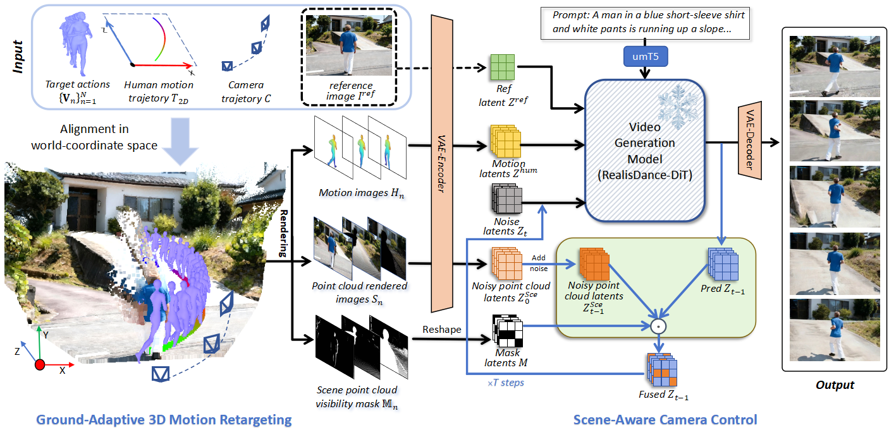

3STC-HIA is an inference-time guidance-based human image animation method that generates scene-adaptive, trajectory-controllable human motion videos with camera movement. Given a reference image, target actions, a human motion trajectory, and a camera trajectory, the method enables human motion retargeting with ground-adaptive trajectory control, while enhancing effect of camera movement through point-cloud-based scene visibility analysis. In the top row, a subject is shown running on flat terrain along motion trajectory 1, captured from varying viewpoints defined by the camera trajectory. In contrast, the bottom row illustrates the same running action performed on a sloped surface along motion trajectory 2 under the same camera views, where the character automatically adjusts its altitude and body orientation to adapt to the scene's geometry.
Abstract
Human image animation, which aims to generate a video of a certain reference subject following a provided action sequence, has received extensive research interest. As diffusion-based video foundation models develop, existing animation works have began to upgrade the guidance information from 2D skeleton/pose to 3D modeling conditions. Despite achieving reasonable results, these approaches face challenges in synthesizing trajectory-controllable human motion within natural scene under changed camera views. In this work, we present a scene-adaptive human image animation framework that controls both human motion and camera trajectories within a reconstructed 3D environment for video generation. To achieve this, we first develop a ground-adaptive 3D motion retargeting approach to enable user-friendly motion trajectory control adapting to the changes of elevations of ground and orientations automatically. Then we design a viewpoint-adaptive latent fusion mechanism to inject point-cloud geometric priors through scene-visibility masking, providing precise guidance for viewpoint changes under camera control. Experiments on two standard human image animation benchmark datasets demonstrate remarkable improvements of our method over the state of the arts in related video generation metics.
Method Overview

The pipeline of our 3STC-HIA. We first align the target action sequence ${\mathbf{V}n}{n=1}^N$ with the reconstructed point cloud of the reference image $I^{\mathrm{ref}}$ in the world-coordinate space. The subject in $I^{\mathrm{ref}}$ (e.g., the person) is then animated to follow the user-defined 2D motion trajectory $T_{2D}$ while adapting to the varying elevation of the scene ground. During the subsequent generation stage, at each diffusion timestep, the predicted latents are fused with the noisy latents using guidance from the viewpoint-adaptive visible scene point cloud. This is achieved through a scene-visibility mask, which enhances camera control along the specified trajectory $\mathcal{C}$.
Ablation on ground-adaptive 3D motion retargeting
case-1
Without ground adaptation(Penetration)
With ground adaptation
case-2
Without ground adaptation(floating)
With ground adaptation
Ablation on ground-adaptive 3D motion retargeting. Our method addresses floating or penetrating on steps and slopes while enabling the human movement to undulate with the ground.
Ablation on viewpoint-adaptive scene guided fusion for camera control
case-1
Without viewpoint-adaptive scene guidance
With viewpoint-adaptive scene guidance
case-2
Without viewpoint-adaptive scene guidance
With viewpoint-adaptive scene guidance
case-3
Without viewpoint-adaptive scene guidance
With viewpoint-adaptive scene guidance
When the camera pulls back to follow a forward-moving character, our method preserves correct background recession and perspective, avoiding first-frame dominance(case-2,case-3). Even under significant camera movement, it maintains smooth motion and physically consistent background(case-1).
Qualitative Comparison
Qualitative comparison of our method and baselines. The results of our method demonstrate coherent and natural human motion that maintains good physical consistency with the scene.
Quantitative comparison
For detailed results, please refer to the paper.